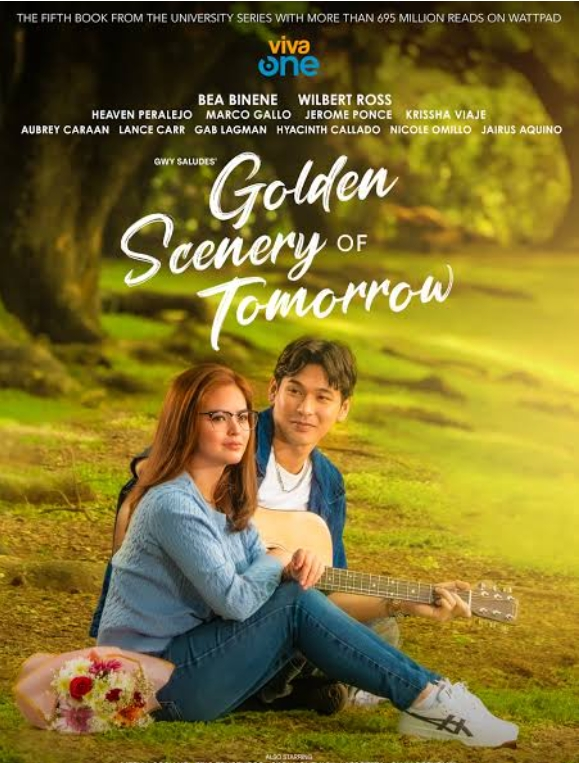
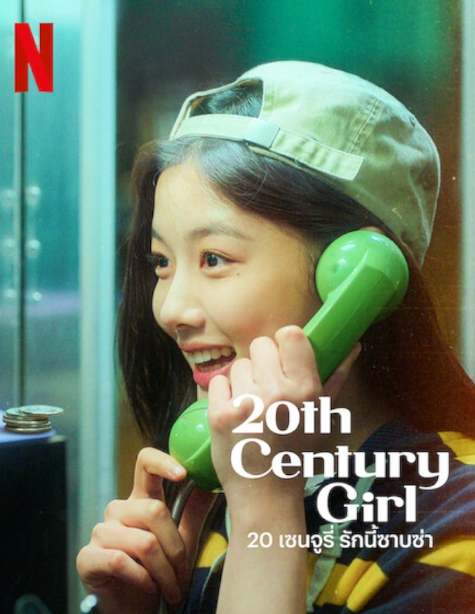

Romance
Golden Scenery of Tomorrow
a 2025–2026 Philippine romantic drama series on Viva One. Two childhood best friends grow up together while navigating love, dreams, and new challenges.

Romance
a 2025–2026 Philippine romantic drama series on Viva One. Two childhood best friends grow up together while navigating love, dreams, and new challenges.

Romance
A nostalgic South Korean romance film set in 1999 that follows a bright 17-year-old high school student who closely monitors her best friend's crush, only to unexpectedly fall in love herself.
Romance
2019 Chinese-Taiwanese romantic comedy film directed by Frankie Chen. The movie is a popular adaptation of the classic Japanese manga series Itazura na Kiss by Kaoru Tada.
Tells the story of lifelong best friends Avianna "Via" Diaz, a quiet architecture student, and Larkin "Arkin" Sanchez, a film student who suddenly shoots to fame as a major celebrity. As their close friendship deepens into a secret romance, they face severe friction from the public eye and obsessive fans, which triggers Via's intense anxiety and forces them down separate paths. Seeking peace and space to heal, Via moves to Spain to pursue her architectural career, leading to years of heartbreak, maturity, and painful distance. Ultimately, a new project brings Via back to the Philippines, where she and Arkin face their unresolved feelings, find the courage to confront the past, and finally build the bright, public future together they had always dreamed of.
Follows 17-year-old Na Bo-ra, who promises to spy on a popular classmate named Baek Hyun-jin for her best friend, Yeon-du, who is traveling to the U.S. for critical heart surgery. While gathering information, Bo-ra inadvertently spends time with Hyun-jin's closest friend, Poong Woon-ho, and the two share a deeply intense, sweet, and mutual first love. However, when a healthy Yeon-du returns, a devastating misunderstanding reveals that the boy Yeon-du actually liked all along was Woon-ho, prompting a heartbroken Bo-ra to sacrifice her own feelings to protect her best friend's happiness. The relationship fractures completely when Woon-ho abruptly moves back to New Zealand, and decades later in 2019, an adult Bo-ra receives an art exhibition invitation and a videotape from Woon-ho's younger brother, uncovering the painful, long-hidden truth that Woon-ho never stopped loving her but tragically passed away years ago before they could ever reunite.
The plot centers on Yuan Xiangqin (played by Lin Yun), an ordinary and academically struggling student, who falls instantly in love with Jiang Zhishu (played by Darren Wang), an icy genius with an IQ of 200. Their paths collide during a literal stumble on their first day of school, resulting in an accidental kiss that sparks Xiangqin's unrequited devotion. After a series of rejections and an earthquake that leaves her family homeless, Xiangqin unexpectedly moves into the home of Zhishu's parents, forcing the polar opposites to live under the same roof.